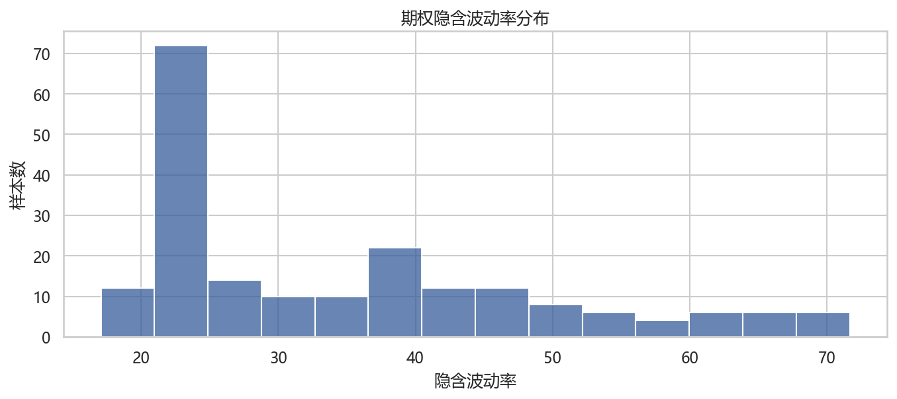
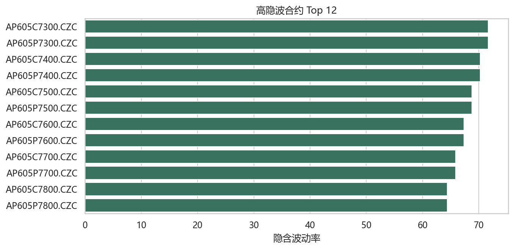
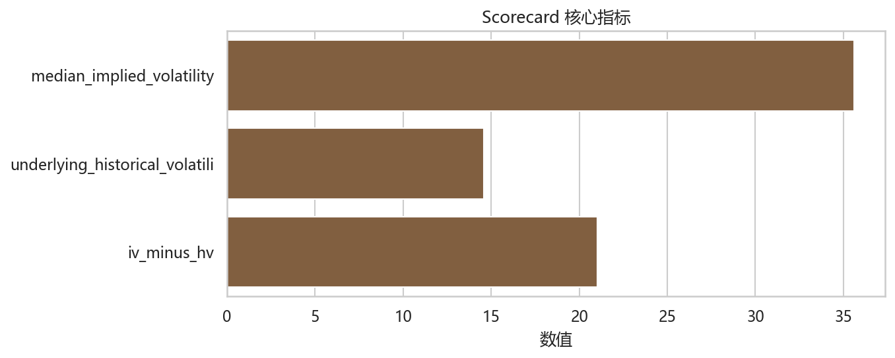

衍生品偏斜情绪盯盘 Agent
用期权隐含波动率与标的历史波动率观察风险偏好。
核心结论
一句话结论：期权隐含波动率显著高于标的历史波动率，说明衍生品市场正在给风险或事件预期支付溢价。
这份报告回答的问题：期权市场是否正在为风险或事件预期支付明显溢价？
先盯哪里：隐含波动率、历史波动率、IV-HV 差和高隐波合约。
这个 Agent 适合你解决什么问题
它把 Pandadata 的多张表压成一份研究判断：先告诉你现在处于什么状态，再告诉你证据、反证和下一轮观察动作。它适合研究、盯盘、复盘和交接，不负责自动下单。
关键证据图
下面三张图使用本次真实数据生成。每张图都配了读法：看图不是为了装饰，而是为了确认当前判断有没有足够支撑。

隐含波动率中位数为 35.60。

标的历史波动率为 14.58。

IV-HV 差为 21.02，风险溢价较明显。
证据拆解
如果你只看一句结论，容易误用。这里把支撑判断的关键证据拆出来，方便你决定要不要继续跟踪。
- 隐含波动率中位数为 35.60。
- 标的历史波动率为 14.58。
- IV-HV 差为 21.02，风险溢价较明显。
情景推演
同一组数据在不同后续变化下，会导向不同解释。先把三种可能路径写清楚，后续复盘时就不会被单日波动带偏。
| 情景 | 触发条件 | 用户解读 |
|---|---|---|
| 风险溢价延续 | IV-HV 差继续扩大 | 市场愿意为不确定性付费 |
| 溢价收敛 | IV 回落或 HV 上升 | 事件预期被消化 |
| 结构性偏斜 | 少数合约隐波远高于截面 | 检查到期日和行权价结构 |
如果下面条件出现，当前判断需要降级或重新解释。
- 隐波溢价快速回落。
- 样本集中在流动性较弱合约。
- 标的历史波动率上升解释了大部分差值。
观察清单
下面是下一轮最值得继续盯的样本或触发项。表格只保留前排样本，更多细节可看同目录下的 CSV。
| 日期 | 代码 | 隐含波动率 |
|---|---|---|
| 20260310 | AP605C7300.CZC | 71.67 |
| 20260310 | AP605P7300.CZC | 71.67 |
| 20260310 | AP605C7400.CZC | 70.22 |
| 20260310 | AP605P7400.CZC | 70.22 |
| 20260310 | AP605C7500.CZC | 68.78 |
| 20260310 | AP605P7500.CZC | 68.78 |
| 20260310 | AP605C7600.CZC | 67.33 |
| 20260310 | AP605P7600.CZC | 67.33 |
| 20260310 | AP605C7700.CZC | 65.87 |
| 20260310 | AP605P7700.CZC | 65.87 |
| 20260310 | AP605C7800.CZC | 64.41 |
| 20260310 | AP605P7800.CZC | 64.41 |
下一步观察
- 跟踪 IV-HV 差是否收敛。
- 结合期权到期日和标的事件日确认溢价来源。
- 把高隐波合约分到期日、行权价继续拆解。
- 当前 衍生品偏斜情绪盯盘 Agent 的主判断，是否被图表、scorecard 和观察清单同时支持？如果只有单一证据支持，应降低置信度。
- 后续一个交易日或一个观察窗口里，哪个指标最容易推翻当前判断？
- 这个结果更适合用于环境判断、风险提示、样本筛选，还是进一步个股/品种研究？
你会得到哪些可继续使用的材料
除了这份报告，每个 Agent 还会留下适合复盘、交接、二次研究和其他 AI Agent 继续处理的材料。默认先读报告，只有需要审计或二次加工时再展开材料清单。
展开材料清单和指标口径
配套材料
| 材料 | 位置 | 怎么用 |
|---|---|---|
| 图文报告 | report.html | 先读核心结论，再看图表和反证条件，决定是否进入下一轮研究。 |
| 证据图 | charts/*.png | 放进复盘、PPT 或研究笔记，用来解释当前判断来自哪里。 |
| 情景决策矩阵 | decision_matrix.csv | 把当前、升级、降级和证据不足四类情景拆成后续动作。 |
| 盯盘清单 | monitoring_checklist.csv | 按优先级跟踪下一个观察窗口最容易改变判断的指标。 |
| 观察规则 | alert_rules.json | 交给其他 AI Agent 或自动化流程读取，用于提醒升级、降级和数据缺口。 |
| 研究日志模板 | research_journal_template.md | 记录触发原因、支持证据、反证证据和下次重跑条件。 |
| 交接卡 | handoff_card.md | 快速告诉另一个研究员这个 Agent 当前回答什么问题。 |
| 数据字典 | data_dictionary.csv | 查看本次用了哪些 Pandadata 表、字段和行数。 |
| 可信度说明 | 报告页底部 | 快速确认数据读取、证据充分性、分析质量和交易边界是否都通过检查。 |
指标口径
| 字段 | 解释 |
|---|---|
| 状态标签 | Agent 对多张表、多项指标聚合后的当前判断，适合盯盘和研究分层。 |
| 核心证据图 | 最直接支撑当前判断的图表，用于快速确认主线是否成立。 |
| 辅助证据图 | 用于拆解驱动因素、检查风险来源或发现结构性分化。 |
| 情景推演 | 把后续可能发生的变化翻译成用户可理解的研究路径。 |
| 反证条件 | 一旦出现，就需要降低当前判断置信度或重新解释数据。 |
适合回答的问题
| 用户问题 | 报告回答方式 |
|---|---|
| 衍生品偏斜情绪盯盘 Agent 当前更像环境提醒、结构变化还是风险警报？ | 用状态标签、核心结论和两张证据图给出分层判断。 |
| 接下来最应该盯什么？ | 用观察清单和下一步观察列出可继续跟踪的样本、字段或触发项。 |
| 这个判断什么时候应该作废？ | 用反证条件和限制假设提示降级、重算或重新解释的边界。 |
| 它能不能直接下单？ | 不能。它提供研究和盯盘证据，交易动作仍需要用户自己的组合、风控和执行规则。 |
数据来源与可信度
本报告使用 Pandadata 真实接口数据生成；它是研究和盯盘材料，不是自动交易指令。当前关注等级为 高关注，请结合自己的组合、风控和执行规则使用。
限制与假设：隐含波动率样本来自单日截面，不能单独解释方向性观点。
查看数据窗口、接口调用和质量检查
生成时间：2026-06-15 00:01:34。数据窗口：{'market': ['20250102', '20250110'], 'lhb': ['20250102', '20250110'], 'options': ['20260310', '20260310']}。
- margin: 7 rows, 5.96s
- lhb_list: 550 rows, 6.94s
- fina_reports: 4 rows, 8.44s
- index_weights: 600 rows, 7.43s
- industry_constituents: 1 rows, 5.62s
- future_dominant_corr: 9 rows, 6.33s
- option_implied_volatility: 5404 rows, 8.29s
- option_underlying_volatility: 1 rows, 6.08s
质量检查：
- 数据读取：通过
- 证据充分性：通过
- 分析质量：通过
- 材料完整性：通过
- 交易边界：通过
- 研究材料包：通过